Style de jeu et condition de victoire
Spright est un archétype de Monstres Tonnerre composé d'attributs Feu et Ténèbres. Ils se spécialisent dans l'utilisation de tout ce qui est lié au "2", comme le Niveau, le Rang et le Lien.
Tous les Monstres du Deck Principal Spright partagent le même effet : Si vous contrôlez un Monstre de Niveau/Rang/Lien 2, il peut s'invoqué spécialement.
Ils ont également un Effet Déclencheur lors de l'Invocation Spéciale, comme ajouter plus de Cartes Spright de la main au Deck, ou annuler une carte de l'adversaire.
Grâce à cela, les Sprights peuvent facilement envahir le terrain avec des Monstres de Niveau 2, ce qui rend plus facile l'Invocation de puissants Monstres de Rang/Lien 2 depuis l'Extra Deck.
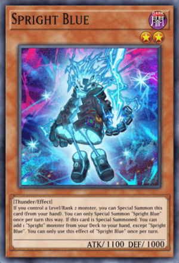 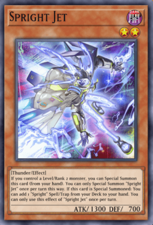 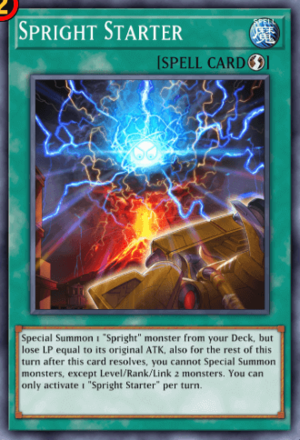
Spright Blue et Spright Jet sont vos principaux chercheurs du Deck. Vous pouvez les Invoquer Spécialement depuis la main si vous avez un Monstre de Niveau/Rang 2 sur le terrain.
Une fois Invoqués Spécialement, Blue vous permet d'ajouter n'importe quel Monstre Spright du Deck à la main, sauf lui-même. Tandis que Jet ajoute plutôt une Carte Magie/Piège Spright.
Spright Starter est une Carte Magie Jeu-Rapide qui vous permet d'Invoquer Spécialement n'importe quel Monstre Spright depuis le Deck, facilitant ainsi l'accès à Blue et Jet ou à d'autres Monstres Spright. Notez que vous perdrez des LP égaux à l'Attaque du Monstre que vous avez Invoqué, ainsi que vous bloquer de l'Invocation de Monstres non de Niveau/Rang/Lien 2.
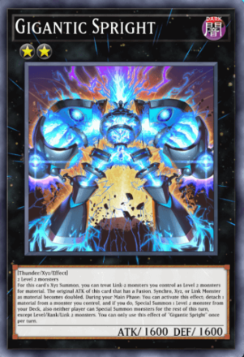 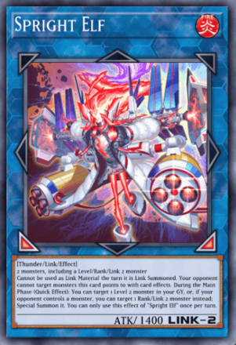
Gigantic Spright est l'un des Monstres les plus puissants de Spright. Il ne nécessite que 2 Monstres de Niveau 2 pour l'Invoquer ou l'utilisation de n'importe quel Monstre Lien-2 comme matériau. Gigantic Spright brille surtout avec son effet puissant qui vous permet d'Invoquer Spécialement n'importe quel Monstre de Niveau 2 depuis votre Deck.
De plus, Gigantic Spright bloque les deux joueurs de l'Invocation de Monstres non de Niveau/Rang/Lien 2, ce qui signifie que vous êtes complètement immunisé contre la menace de Nibiru pendant votre combo.
Spright Elf protège tout Monstre vers lequel il pointe en les rendant immunisés aux effets de ciblage. Spright Elf a également un Effet Rapide pendant la Phase Principale qui vous permet d'Invoquer Spécialement n'importe quel Monstre de Niveau 2 depuis votre Cimetière.
Style de jeu et condition de victoire
Le Deck Labyrinthe se concentre sur l'utilisation de Cartes Piège Normales pour maintenir le contrôle du terrain, au point que plus de la moitié du Deck est composée de Cartes Piège. Le Deck excelle dans sa capacité à perturber l'adversaire, notamment en retirant des cartes Monstre du terrain.
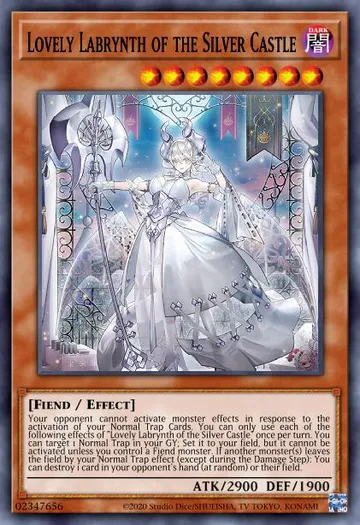 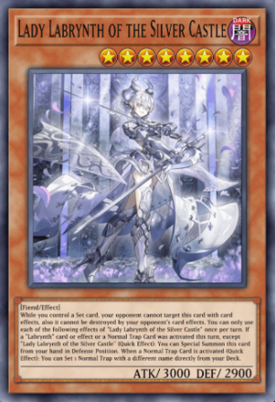
Le principal monstre boss de ce deck est le monstre as de l'archétype, "Adorable Labrynth du château d'argent". Le deck et l'archétype en général sont construits autour de cette carte et de sa capacité à récupérer des cartes piège normales du cimetière et à les poser sur le terrain, prêtes à être utilisées.
Avec la sortie du pack de sélection complot redouté, "Mademoiselle Labrynth du château d'argent" est le deuxième monstre boss du deck. Ce monstre gagne l'immunité contre les effets ciblés si vous avez des cartes posées, peut poser des pièges directement depuis votre deck, et peut s'invoquer spécialement si vous activez un piège posé.
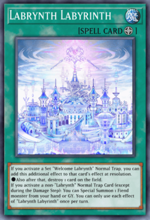
La deuxième carte clé pour ce deck serait le sort de terrain signature, "Labrynth labyrinthe". L'activation d'une copie posée de "Bienvenue Labrynth" fournit un effet supplémentaire de pouvoir détruire une carte sur le terrain. En plus de cela, si une carte Piège non-Labyrinthe est activée, cela peut invoquer spécialement un monstre de type Démon depuis la main ou le Cimetière - parfait pour faire sortir "l'Adorable Labrynth du Château d'Argent" facilement.
Style de jeu et condition de victoire
Pour la plupart, le style de jeu des Scareclaw ne change pas beaucoup, il est simplement renforcé par la puissance des monstres Kashtira. Le monstre clé est le "Scareclaw Kashtira" qui relie les deux archétypes.
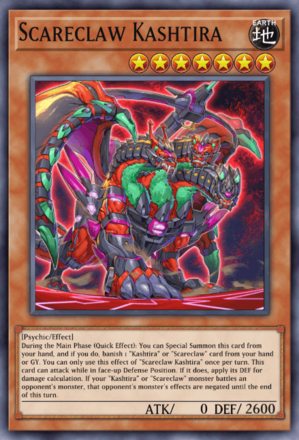
Le monstre principal, Scareclaw Kashtira, peut se Invoquer Spécialement depuis la main en bannissant soit une carte "Scareclaw" soit une carte "Kashtira" depuis la main ou le Cimetière. C'est l'ajout parfait pour tout Deck Scareclaw, étant capable d'attaquer en Position de Défense et de nier les effets de monstre chaque fois qu'un monstre "Scareclaw" ou "Kashtira" attaque.
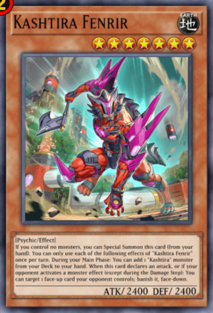 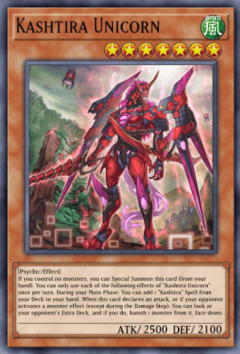 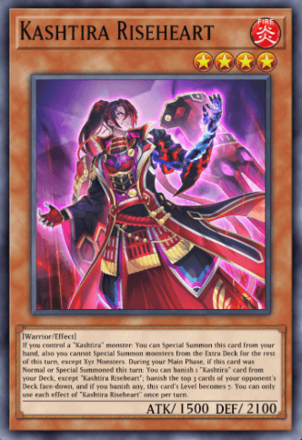
Le reste du moteur Kashtira punit l'adversaire tant qu'ils restent sur le terrain. Kashtira Fenrir bannit les cartes face recto du terrain face verso si l'adversaire active un effet de monstre, et Kashtira Unicorn bannit une carte de leur Extra Deck face verso.
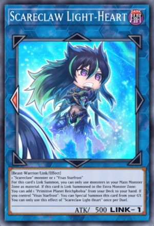 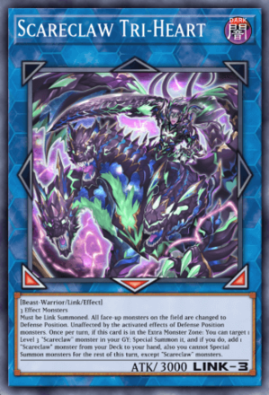
Le style de jeu principal de ce Deck tourne autour des deux Monstres Lien "Scareclaw" : "Scareclaw Light-Heart" et "Scareclaw Tri-Heart". Le premier est le monstre avec lequel vous commencez, car l'Invoquer par Lien permet de chercher la Carte Magie de Terrain de l'archétype, Planète Primitive Reichphobia.